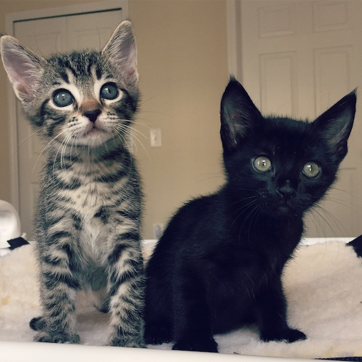

Our Current Foster Kittens

Kaiser and Pierce
Born: October 10
Origin: These adorable brothers were found at two weeks old, abandoned in a Kaiser canal excavator in a motor fleet near St. Pierce, Florida.
Cannoli
Born: November 8
Origin: Cannoli was rescued at one day old, as the only surviving member of his litter. His mom cat needed emergency surgery and would be unable to nurse or care for him.